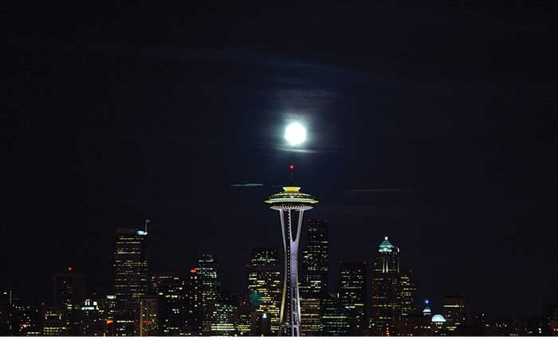
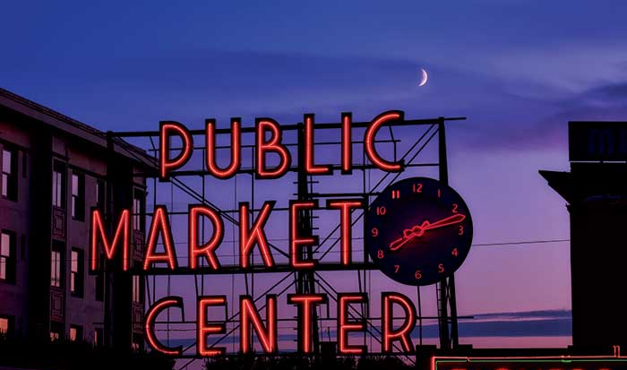
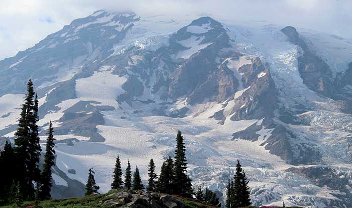

- Главная /
- Туразметки /
- Cиэтл – остатки былой роскоши
Cиэтл – остатки былой роскоши
Сиэтл – это город-бунтарь, принимающий всех, кто любит свободу и ненавидит стереотипы, пристанище миллиардеров и уличных сумасшедших! Здесь уже в аэропорту встречаешь разные странности. Кресло-качалки вместо обычных стульев, необычных людей и электромобили, которые довозят до метро всех приезжих.
Сиэтл – дождливый город, но очень зелёный! Он похож на чёрно-белую фотографию, которую наполняют красками сами люди. Здесь столько ярких персонажей, что даже не сразу можно определить возраст, хипстер он или бездомный, богатый айтишник или бедный студент.
В этом необычайно чистом городе можно встретить водопад Сноквалми. Именно его снимали для заставки сериала «Твин Пикс».
Сиэтл – дождливый город, но очень зелёный! Он похож на чёрно-белую фотографию, которую наполняют красками сами люди. Здесь столько ярких персонажей, что даже не сразу можно определить возраст, хипстер он или бездомный, богатый айтишник или бедный студент.
В этом необычайно чистом городе можно встретить водопад Сноквалми. Именно его снимали для заставки сериала «Твин Пикс».

В Сиэтле следят за чистотой города, дотошно разделяя мусор. Тут живут люди, уважающие свободу выбора. Проявляется это настолько сильно, что даже стали появляться странные группы людей – например, бездомные вегетарианцы.
На фоне всего этого сумасшествия можно встретить на берегах озера Вашингтон дома всем известных миллиардеров. Например, Билла Гейтса (Microsoft), Пола Аллена (Microsoft), Джеффа Безоса (Amazon), Чарльза Симони (Intentional Software) и т.д. И это тоже вполне объяснимо – Сиэтл, на самом деле, полноправно считается второй Кремниевой долиной.
На фоне всего этого сумасшествия можно встретить на берегах озера Вашингтон дома всем известных миллиардеров. Например, Билла Гейтса (Microsoft), Пола Аллена (Microsoft), Джеффа Безоса (Amazon), Чарльза Симони (Intentional Software) и т.д. И это тоже вполне объяснимо – Сиэтл, на самом деле, полноправно считается второй Кремниевой долиной.

Любителям природы мы советуем погрузиться в атмосферу сказочного леса – Хох. Здесь самые необычные деревья, которые могут напоминать персонажей из фильмов, пауков и великанов! Для путешественников, желающих объехать окрестности Сиэтла мы подготовили небольшой чек-лист достопримечательностей.

Достопримечательности Сиэтла
Не откажите себе в удовольствии оказаться в вечернее время в исторической части города. Именно это место – площадь Пайонир – считают местом рождения города. Необычайной красоты кирпичные старинные здания с тотемными знаками, уютные мостовые из мощатки в типичном стиле североамериканских городов и невероятное количество молодежи. Где еще как не здесь можно проникнуться красотой «истинной Америки» в Сиэтле.
Если выне поленитесь и посетите этотзаповедник в долине Каскадных гор, то надолго будете потрясены его красотой. На фоне одиночных гор расположен густой хвойный лес с абсолютно зеркальными озерами. Для удобства и комфорта уединения с природой можно арендовать лодку или следовать по специальным туристическим безопасным тропам.
Это место поистине считают маленькой копией традиционного китайского сада. Парк был воссоздан по точным правилам китайских садоводов в сычуаньском стиле, с натуральными природными материалами. Пикантность месту добавляет изумительная подсветка по берегам водоема. Китайский сад в Сиэтле довольно трудно найти неопытным туристам, поэтому смело отправляйтесь к кампусу South Seattle College.
Это место на улице Пайк Плэйс Маркет славится не только среди местных жителей, но и доброй половины гостей города. «Щучий рынок» получил такое название благодаря высокому качеству рыбной продукции и фермерских продуктов. Между тем, популярность его в том, что это самый старинный базар в США. Он представляет из себя большое 6-этажное здание, в котором помимо отменных продуктов собраны удивительные лавки с продукцией американских ремесленников. Так что приобрести антиквариат, книги и эксклюзивные поделки можно тут.
Место чарующее, манящее. «Космической иглой» называют всемирно известную башню, подаренную городу в честь Всемирной выставки (1962 г.). Внешне она напоминает вышку с посаженной «космической тарелкой», внутри которой – действующий вращающийся ресторан «Небесный город». Посетители вращаются и за 47 минут им открывается отличный панорамный вид на Сиэтл и его окрестности. Это стоит увидеть!

Сиэтл – это город-бунтарь, принимающий всех, кто любит свободу и ненавидит стереотипы. Ему все равно, что думают о нём окружающие, ведь он такой один в своём роде!